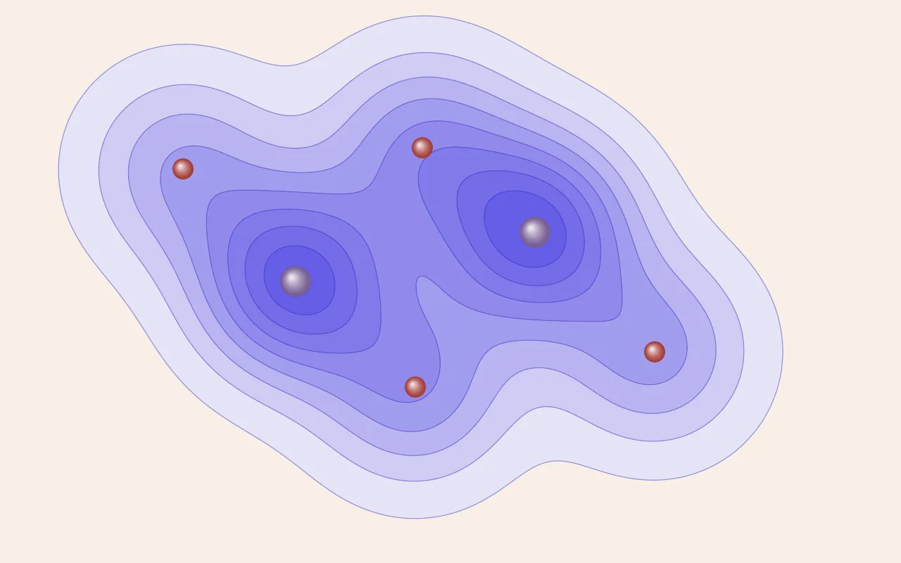

DFT 이론 [1] — 슈뢰딩거 방정식을 "못 풀어서" 만들어진 도구
배터리 재료 연구를 시작하면서 DFT를 처음부터 다시 공부하고 있습니다. 논문 공저자로 이름을 올려 본 적은 있지만, 이 계산이 왜 되는지는 설명하지 못했습니다. 이 글은 그 부분을 메우면서 정리한 노트입니다. 사전 지식 없이도 읽을 수 있게 썼고, 나중에 제가 다시 꺼내 보려는 용도이기도 합니다.

DFT는 무엇을 하는 도구인가
한 문장으로 줄이면 이렇습니다. DFT(밀도범함수이론)는 원자의 종류와 위치를 넣으면, 그 배치의 총 에너지와 전자 상태를 양자역학 원리로 계산해 주는 도구입니다.
에너지 하나로 뭘 할 수 있을까 싶지만, 재료과학의 질문은 대부분 결국 에너지 비교로 바뀝니다. 어느 상(phase)이 안정한지는 에너지가 낮은 쪽을 보면 되고, 배터리 전압은 이온을 넣고 뺄 때의 에너지 차이에서 나옵니다. 이온이 어느 길로 움직이는지도 경로 중간의 에너지 언덕이 낮은 쪽을 찾는 문제입니다. 논문에 나오는 그림들도 대부분 이 계산 결과를 가공한 것입니다.
"제1원리(first-principles)"라는 말은 실험값에 맞춘 파라미터 없이 전자의 질량·전하·플랑크 상수 같은 물리 상수만으로 계산한다는 뜻입니다. 그래서 아직 합성된 적 없는 물질도 계산할 수 있고, 신물질 스크리닝이 가능한 것도 이 덕분입니다.
왜 정면돌파는 불가능한가
원리만 보면 DFT는 필요 없습니다. 전자의 상태는 파동함수 Ψ로 기술되고, 슈뢰딩거 방정식 ĤΨ = EΨ를 풀면 에너지가 나옵니다. 1929년에 디랙이 이미, 화학 전체의 기초 법칙은 다 알려졌고 문제는 그 방정식이 너무 어려워서 못 푼다는 것뿐이라고 했습니다.
얼마나 어려운지 보면, 전자 N개의 파동함수 Ψ(r₁, r₂, …, r_N)는 변수가 3N개인 함수입니다. 망간 원자 하나의 전자 25개만 해도 75차원 함수이고, 계산에 쓰는 셀 하나(전자 수백 개)면 수천 차원이 됩니다. 이 함수를 격자점에 저장하려고만 해도 필요한 메모리가 우주의 원자 수를 넘어갑니다. 이걸 차원의 저주라고 부릅니다. 컴퓨터가 느려서가 아니라 원리적으로 불가능한 겁니다.
전자를 하나씩 따로 풀 수도 없습니다. 전자들은 서로 밀어내면서 상관되어 움직입니다. 한 전자의 위치가 다른 모든 전자의 움직임과 엮여 있어서, 문제가 전자 하나씩으로 나뉘지 않습니다. 이게 어려움의 본질입니다.
여기에는 조용히 깔린 가정이 하나 있습니다. 보른-오펜하이머 근사입니다. 원자핵은 전자보다 수천 배 무거워서 거의 멈춰 있는 배경으로 봅니다. 그래서 원자 위치를 고정해 두고 전자 문제만 푸는 구도가 성립하고, DFT의 입력이 원자 좌표인 것도 이 때문입니다.
1964년의 우회로, 밀도만 있으면 된다
DFT는 Hohenberg와 Kohn이 증명한 정리 두 개에서 출발합니다. 처음 들으면 믿기 어려운 건 첫 번째입니다. 바닥상태의 정보는 3N차원 파동함수가 아니라 3차원 함수인 전자밀도 n(r)에 이미 다 들어 있다는 겁니다. 공간 곳곳에 전자가 얼마나 있는지만 알면, 원리적으로는 에너지를 포함한 모든 게 정해진다는 뜻입니다.
비유하자면 도시 시민 한 사람 한 사람의 동선(파동함수)을 다 추적하지 않아도, 시간대별 인구밀도 지도(전자밀도)만으로 그 도시의 상태가 완전히 정해진다는 얘기입니다. 수천 차원 문제가 3차원 문제로 줄어듭니다.
제1정리, 그리고 반 페이지짜리 증명
정리를 정확히 쓰면 이렇습니다. 바닥상태 밀도 n(r)이 같으면 외부 퍼텐셜(전자 입장에서는 핵들이 만드는 지형)도 같다. 밀도가 퍼텐셜을 정하면 해밀토니안이 정해지고, 해밀토니안이 정해지면 파동함수를 포함한 나머지가 전부 정해집니다. 밀도가 요약본이 아니라 원본과 같은 양의 정보를 갖고 있다는 뜻입니다.
증명이 어려울 것 같은데, 원논문의 증명은 반 페이지입니다. 필요한 건 변분원리 하나입니다. 바닥상태가 아닌 상태로 에너지를 계산하면 반드시 진짜 바닥상태 에너지보다 높게 나온다는 사실입니다.
귀류법으로 보겠습니다. 서로 다른 두 퍼텐셜 V₁과 V₂가 똑같은 바닥상태 밀도 n(r)을 만든다고 가정합니다. V₁에서의 진짜 바닥상태 Ψ₁을 V₂에 넣어 에너지를 계산하면, 변분원리 때문에 V₂의 진짜 바닥상태 에너지보다 높게 나옵니다. 식으로 쓰면 E₂ < E₁ + (두 퍼텐셜의 차이를 밀도로 적분한 값)입니다. 두 경우의 밀도가 같다고 했으니, 거꾸로 Ψ₂를 V₁에 넣어도 똑같은 모양의 부등식이 나옵니다. 둘을 더하면 적분 항은 부호가 반대라 지워지고 E₁ + E₂ < E₁ + E₂만 남습니다. 자기 자신보다 작은 수는 없으니 모순이고, 처음 가정이 틀린 겁니다. 같은 밀도를 만드는 서로 다른 퍼텐셜은 있을 수 없습니다.
제2정리, 최소화하면 답이 나온다
제1정리는 밀도 안에 답이 들어 있다는 데까지만 말합니다. 그 답을 어떻게 찾는지는 두 번째 정리가 알려 줍니다. 에너지는 밀도의 "범함수" E[n]이고(범함수는 함수를 넣으면 숫자가 나오는 함수입니다), 이 범함수는 진짜 바닥상태 밀도를 넣었을 때 가장 작아집니다. 그러면 후보 밀도를 이리저리 바꿔 가며 E[n]이 가장 낮아지는 곳을 찾으면 됩니다. 뒤에 나올 SCF 루프가 하는 일이 바로 이 탐색이고, Density Functional Theory라는 이름도 여기서 나왔습니다.
실제로 계산할 때 주의할 점이 하나 있습니다. "참값보다 낮아질 수 없다"는 보장은 정확한 범함수에만 해당합니다. 근사 범함수를 쓰는 실제 계산은 실험값보다 낮은 에너지를 얼마든지 낼 수 있습니다. 변분원리를 어긴 게 아니라 근사의 오차라서 이상한 일은 아닙니다.
문제는 두 정리가 그런 범함수가 존재한다는 것까지만 보장한다는 점입니다. 정확한 형태는 아무도 모릅니다. 정확한 E[n]을 알면 화학은 사실상 다 풀린 셈이지만, 현실에서는 근사해야 합니다. 이 근사가 어디까지 왔는지는 뒤의 "사다리" 이야기에서 다룹니다.
밀도만으로 계산해 보려는 시도는 HK가 처음은 아닙니다. 1927년의 Thomas–Fermi 모형이 이미 전자를 밀도로만 다뤘습니다. 그런데 이 모형은 운동에너지를 밀도의 간단한 함수로 대충 근사했고, 그 탓에 분자가 결합한다는 사실조차 재현하지 못했습니다. 원자 두 개를 붙여 놓아도 늘 떨어져 있는 쪽이 에너지가 낮게 나왔습니다. 운동에너지는 전체 에너지에서 차지하는 몫이 워낙 커서, 이 항을 대충 근사하면 결합 같은 기본적인 것도 틀려 버린다는 걸 보여 준 사례입니다. 다음 절과 이어지는 얘기입니다.
1965년의 실용화, 가짜 전자로 바꿔치기
존재 증명만으로는 계산을 할 수 없습니다. 이듬해 Kohn과 Sham이 내놓은 방법이 지금 쓰이는 모든 DFT 코드의 뼈대입니다. 서로 밀어내며 얽혀 있는 진짜 전자들 대신, 같은 전자밀도를 만드는 "서로 상호작용하지 않는 가상의 전자들"을 쓰는 겁니다. 가상 전자는 각자 유효 퍼텐셜 안에서 1전자 방정식만 풀면 되고, 이건 3차원 방정식 N개라 컴퓨터로 풀 수 있습니다.
왜 밀도 이론에 오비탈이 다시 나오는가
그런데 이상한 점이 있습니다. 밀도만으로 충분하다는 게 HK 정리인데, 왜 다시 전자 하나하나의 오비탈로 돌아왔을까요. 답은 앞의 Thomas–Fermi에 있습니다. 운동에너지를 밀도로 직접 근사하면 정확도가 너무 떨어집니다. 그런데 가상 전자의 오비탈을 쓰면 운동에너지의 대부분을 근사 없이 정확하게 계산할 수 있습니다. KS 방법은 가장 크고 까다로운 항을 근사하지 않고 정확히 계산하게 해 주는 방법인 셈입니다.
이렇게 보면 전체 에너지를 장부처럼 네 줄로 적을 수 있습니다.
진짜 계와 가상 계의 차이, 그러니까 전자끼리의 교환(exchange)과 상관(correlation) 효과에 오비탈로도 못 잡은 운동에너지 나머지까지, 모르는 것은 전부 교환-상관 에너지 Exc[n] 한 항에 몰아넣습니다. 이 항을 얼마나 잘 근사하느냐가 DFT의 정확도를 정합니다.
가상 전자 하나가 실제로 푸는 방정식도 봐 두면 뒤가 이해하기 쉽습니다. 가상 전자는 세 가지 유효 퍼텐셜을 느낍니다. 핵의 인력, 전체 전자밀도가 만드는 평균 반발, 그리고 Exc에서 나오는 교환-상관 퍼텐셜입니다. 여기서 중요한 점이 하나 보입니다. 이 퍼텐셜은 밀도에 따라 달라지는데, 그 밀도는 이 퍼텐셜로 방정식을 풀어야 나옵니다. 뒤에서 말할 SCF 반복이 필요한 이유가 이것입니다.
이 장부에는 숨은 결함도 하나 있습니다. 평균 반발 항은 전자가 "전체 밀도"와 반발하는 것으로 계산하는데, 전체 밀도에는 그 전자 자신도 들어 있습니다. 전자가 자기 자신을 밀어내는 가짜 반발이 섞이는 겁니다. 정확한 Exc라면 이 몫을 정확히 지워 주지만, 근사 Exc는 다 지우지 못해서 오차가 남습니다. 이걸 자기상호작용 오차라고 하고, 좁은 공간에 갇힌 전자일수록(대표적으로 전이금속의 d 전자) 크게 나타납니다. 배터리 재료 계산이 왜 하필 여기서 고생하는지는 다음 절에 나옵니다.
하나 덧붙이면, 계산 결과에서 보는 "밴드"나 "오비탈"은 전부 이 Kohn–Sham 가상 전자의 상태입니다. 물리적 실체라기보다는 계산을 위한 장치인데, 실제 전자구조를 꽤 잘 근사해서 해석 도구로 널리 씁니다. 도구로는 믿되 실제 전자 그 자체로 보지는 않는 게 맞는 태도라고 배웠습니다.
근사의 사다리, PBE와 SCAN이 여기서 등장한다
Exc를 근사하는 수준을 Perdew는 "야곱의 사다리"에 비유했습니다. 위 칸으로 갈수록 더 많은 정보를 써서 정확해지고, 그만큼 비싸집니다. 논문에서 보는 PBE나 r2SCAN 같은 이름은 전부 사다리의 몇 번째 칸을 썼느냐는 얘기입니다.
| 사다리 칸 | 사용하는 정보 | 대표 범함수 | 특징 |
|---|---|---|---|
| 1단 LDA | 그 지점의 밀도 값만 | LDA | 균일 전자기체 가정. 고체에서 과결합 경향 |
| 2단 GGA | + 밀도의 기울기 | PBE | 고체 계산의 30년 표준. 싸고 무난하나 전이금속 d 전자에 약함 |
| 3단 meta-GGA | + 운동에너지 밀도 | SCAN, r2SCAN | 정확도 크게 개선. r2SCAN은 수치 안정성까지 확보해 대량 계산의 새 표준 |
| 4단 하이브리드 | + 정확한 교환 일부 혼합 | HSE06 | 가장 정확하지만 수십 배 비쌈. 검증용으로만 |
대량 스크리닝 연구에서 2~3단을 고르는 건 이 정확도와 비용의 균형 때문입니다. 그리고 배터리 양극재처럼 전이금속이 들어간 산화물에서는 2단(PBE)의 알려진 결함, 앞에서 본 자기상호작용 오차 때문에 d 전자가 너무 퍼지는 문제가 있습니다. 이걸 보정하려고 Hubbard U라는 페널티 항을 얹은 GGA+U를 쓰거나 아예 3단(r2SCAN)으로 올라갑니다. 보정하지 않으면 배터리 전압이 실험보다 0.5~1V씩 낮게 나옵니다. 처음엔 "DFT가 틀렸다"고 생각하기 쉬운데, 정확히는 "Exc 근사가 불완전하다"고 말해야 합니다.
계산기의 부품들, 입력 파일과 이론의 대응
여기까지가 이론이고, 실제 계산 코드(저는 VASP를 씁니다)의 입력 파일들은 이 이론을 실제로 구현한 것입니다. 이 대응 관계만 잡히면 입력 파일의 설정 하나하나가 무엇을 정하는지 읽힙니다.
| 개념 | VASP에서 | 직관적 의미 |
|---|---|---|
| 주기 경계조건·슈퍼셀 | POSCAR | 결정은 무한하므로 작은 상자를 무한 반복해 표현. 어떤 원소를 어디에 둘지가 이 파일 |
| 평면파 기저 | ENCUT | 파동함수를 사인파들의 합으로 전개할 때 몇 개까지 쓸지 = 이미지의 해상도. 높일수록 정확하고 비쌈 |
| 브릴루앙 존 샘플링 | KPOINTS | 무한 결정의 전자 상태 적분을 유한 개 격자점으로 근사. 실공간 축이 길수록 그 방향 k점은 적게 필요(반비례) |
| 유사퍼텐셜(PAW) | POTCAR | 화학에 관여하지 않는 심층 전자는 얼려 두고 원자가 전자만 계산해 계산량을 크게 줄임 |
| 스핀 분극 | ISPIN, MAGMOM | 스핀 업/다운 밀도를 따로 취급. 자성 있는 전이금속 산화물에서는 필수이며, 초기 추측이 결과를 좌우 |
| 교환-상관 선택 | GGA / METAGGA / LDAU 태그 | 위 사다리에서 어느 칸을 쓸지 + U 보정 여부 |
계산이 실제로 도는 방식, 닭과 달걀의 반복
앞에서 말한 문제로 돌아오겠습니다. 전자가 느끼는 퍼텐셜은 전자밀도에 따라 달라지는데, 전자밀도는 그 퍼텐셜로 방정식을 풀어야 나옵니다. 해법은 반복입니다. 밀도를 추측하고, 방정식을 풀어 새 밀도를 얻고, 답이 더 변하지 않을 때까지 다시 풉니다(자기일관될 때까지 돌린다고 해서 self-consistent). 이게 SCF 루프이고, 로그 파일에 한 줄씩 올라가는 반복 기록이 바로 이것입니다. 제2정리에서 말한 "최소를 찾으면 된다"를 실제로 하는 과정이기도 합니다.
SCF가 수렴하면 원자마다 걸리는 힘이 나옵니다. 힘의 방향으로 원자를 조금 옮기고 다시 SCF를 돌립니다. 힘이 거의 0이 될 때까지 반복하면 그 배치에서 가장 안정한 구조와 최종 에너지가 나옵니다. 여기서 꼭 기억해 둘 게 있습니다. 수렴하지 않은 계산도 숫자는 내놓습니다. 숫자가 나온 것과 그 숫자를 믿을 수 있는 건 별개라서, 결과마다 수렴했는지 확인해야 합니다.
출력을 배터리의 언어로 번역하기
마지막으로, 계산 결과로 나온 숫자들이 어떻게 배터리 논문의 그림이 되는지입니다.
| DFT 출력 | 번역되는 배터리 물성 |
|---|---|
| 총 에너지 E | 상안정성(어느 구조가 이기는가), 전압(이온을 넣고 뺄 때의 에너지 차 ÷ 전하, 사실상 뺄셈) |
| 원자별 자기모멘트 | 산화수 판정. DFT에는 "산화수"라는 출력이 없어서, Mn³⁺≈4μB, Mn⁴⁺≈3μB 같은 스핀 크기로 읽습니다 |
| 상태밀도(DOS) | 페르미 준위 근처에 어떤 오비탈이 있는가 = 충방전 때 어떤 전자가 먼저 반응하는가 |
| 힘·격자상수 | 충방전 중 부피·격자 변화 (재료가 부풀고 뒤틀리는 정도) |
| 경로 에너지 곡선(NEB) | 이온 이동 장벽 = 얼마나 빨리 충전되는가 |
DFT가 못 하는 것
정리하면서 한계도 같이 적어 둡니다. 셋 다 어떻게 피해 갈지가 각각 하나의 연구 분야가 된 항목들입니다.
- 근사 범함수의 오차. 특히 전이금속 d 전자의 자기상호작용 오차입니다. +U와 meta-GGA가 이를 보정하는 방법입니다.
- 0 K 계산. DFT에는 온도가 없습니다. 유한온도 효과(배열 엔트로피 등)는 DFT 밖에서 통계역학으로 따로 다룹니다. 전자는 DFT가, 통계는 몬테카를로가 맡는 역할 분담이 제 연구 주제의 뼈대이기도 합니다.
- 크기 한계. 현실적으로 수백 원자가 상한입니다. 계산 비용이 대략 원자 수의 세제곱으로 늘기 때문이고, 이 한계를 넘으려고 요즘 기계학습 퍼텐셜(MLIP)이 많이 연구되고 있습니다.
전체 요약. 슈뢰딩거 방정식은 원리적으로 옳지만 3N차원이라 풀 수 없습니다(차원의 저주). Hohenberg–Kohn이 3차원 밀도만으로 충분하다는 걸 증명했고(제1정리는 유일성, 제2정리는 최소화 전략), Kohn–Sham이 상호작용하지 않는 가상 전자로 바꿔서 가장 큰 운동에너지 항을 정확히 계산할 수 있게 했습니다. 모르는 것은 전부 Exc 한 항에 담았고, 그 항을 근사하는 수준(사다리)이 정확도를 정합니다. 계산은 SCF 루프(전자)와 이완 루프(원자)를 이중으로 반복하며 돌고, 그 결과로 나온 에너지·모멘트·DOS를 전압·산화수·반응성으로 바꿔 읽는 것이 배터리 계산 연구입니다.
이론은 여기까지입니다. 이 글의 개념이 실제 계산에서 어떻게 나오는지는 실습편에 이어서 씁니다. ENCUT과 MAGMOM을 직접 정하고, SCF 루프가 로그에 찍히는 걸 지켜보고, 자기모멘트로 산화수를 읽어 낸 기록입니다.

Seok
연구하면서 개발합니다. 배터리 재료를 원자 단위에서 계산하는 법을 바닥부터 배우는 중입니다. → 연구 · DFT 글 더 보기